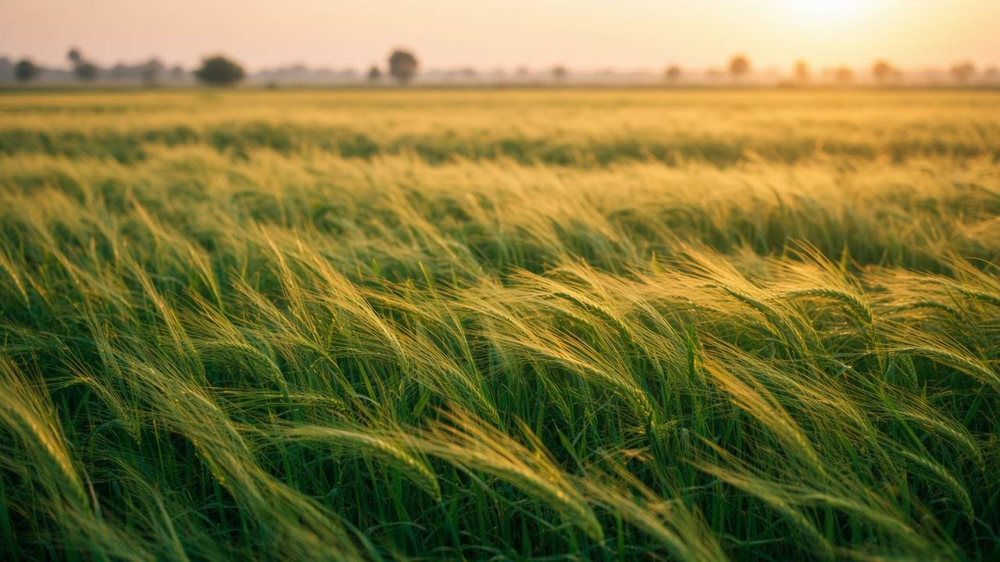
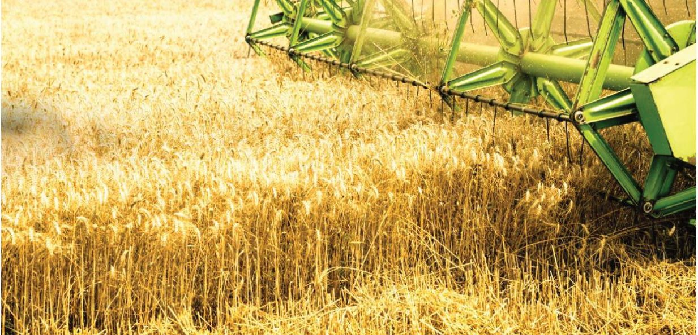
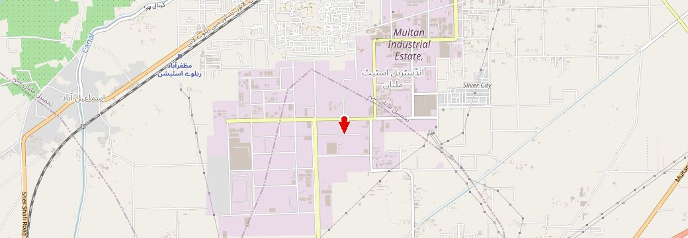
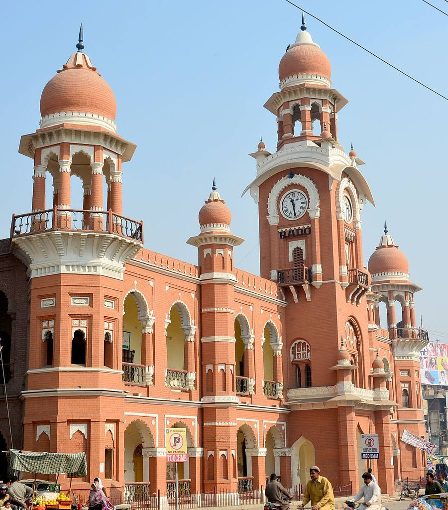

Slow-release natural fertiliserآہستہ گھلنے والی قدرتی کھاد
Feed the soil as well as the plant.زمین کو بھی خوراک دو، اور پودے کو بھی۔
Learn moreمزید جانیں





Company profileکمپنی پروفائل
Katek Ag’s profile covers agribusiness, logistics, grains, and crop inputs, from the Multan office.کیٹک اے جی کا پروفائل زرعی کاروبار، لاجسٹکس، اناج اور فصل کے ان پٹ بتاتا ہے، ملتان کے دفتر سے۔
Partnershipشراکت
Registered under the Partnership Act, 1932, with the Registrar of Firms, Multan, on 3 September 2025.3 ستمبر 2025 کو رجسٹرار آف فرمز، ملتان کے پاس شراکت ایکٹ 1932 کے تحت درج۔
FBRایف بی آر
Taxpayer registration for M/S Katek AG. An association of persons. Income tax active at RTO Multan.ایم/ایس کیٹک اے جی کا ٹیکس رجسٹریشن۔ افراد کی انجمن۔ آر ٹی او ملتان میں انکم ٹیکس فعال۔
Worksدفتر
Industrial Estate, Multan. The name on the register is M/S Katek AG.انڈسٹریل اسٹیٹ، ملتان۔ رجسٹر پر نام ایم/ایس کیٹک اے جی ہے۔
View Form Cفارم سی دیکھیں View FBR certificateایف بی آر سرٹیفکیٹ دیکھیں


The pin marks the industrial estate, not a surveyed door. Map data © OpenStreetMap contributors. City photographs by Junaidahmadj, CC BY-SA 3.0, via Wikimedia Commons.نشان انڈسٹریل اسٹیٹ پر ہے، ناپے ہوئے دروازے پر نہیں۔ نقشہ © اوپن اسٹریٹ میپ۔ شہر کی تصاویر جنید احمد، CC BY-SA 3.0، ویکیمیڈیا کامنز۔